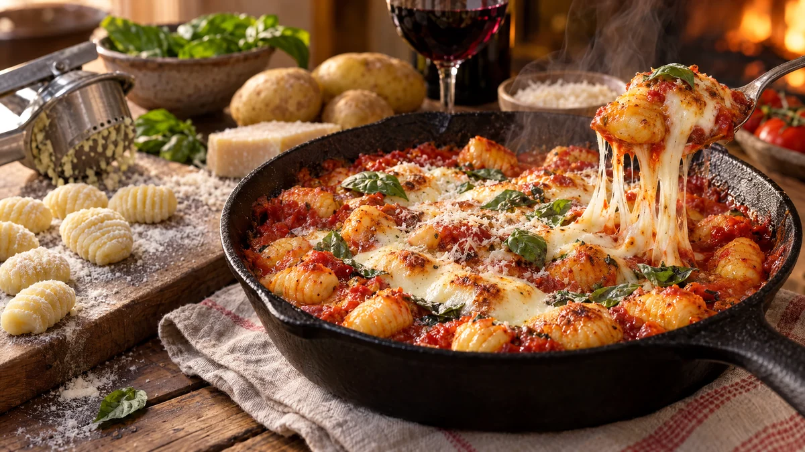

RESTFEST · RECEPTHuvudrätt
Ugnsbakad potatisgnocchi på gårdagens potatis med tomat och mozzarella
Gårdagens kokta potatis, ett ägg och lite mjöl blir mjuka, fluffiga gnocchi som vänds i en enkel tomatsås. De gräddas i ugnen under smält mozzarella tills såsen bubblar och osten får gyllene fläckar. Italiensk mammamat av det som annars hade blivit stekt potatis.
- Förberedelse
- 30 min
- Tillagning
- 25 min
- Portioner
- 4
- Nivå
- Medelsvårt
 Det här behöver du
Det här behöver du
JÄMFÖRT MED DIN KYL
Tryck på + vid det du behöver köpa.
Gnocchi
Tomatsås
Topping
Gör så här
- Pressa potatisen genom en potatispress, eller riv den fint, ner i en bunke.
- Tillsätt ägg och salt och arbeta in mjölet lite i taget, tills degen är mjuk och inte längre kladdar. Knåda så lite som möjligt, då blir gnocchin lätt och luftig.
- Dela degen i fyra delar och rulla dem till långa rullar, ca 2 cm tjocka, på mjölat bakbord. Skär rullarna i bitar, ca 2 cm. Rulla gärna bitarna mot en gaffel, så får de räfflor som håller såsen.
- Sätt ugnen på 225 grader. Skiva vitlöken, fräs den i olivoljan i en ugnsfast panna i 1 minut och häll i tomater, oregano, salt och chili. Låt sjuda i 10 minuter.
- Koka upp en stor kastrull med saltat vatten. Koka gnocchin i omgångar. När de flyter upp till ytan, låt dem koka 30 sekunder till och lyft upp dem med en hålslev.
- Vänd gnocchin i tomatsåsen. Riv mozzarellan i bitar och lägg dem ovanpå, och strö över parmesanen.
- Gratinera i mitten av ugnen i 10–15 minuter, tills såsen bubblar och osten har fått gyllene fläckar.
Dekoration och servering
- Servera direkt i pannan och toppa med färska basilikablad.
- Ringla över lite olivolja och strö över nymald svartpeppar.
- Mjölig potatis ger den lättaste gnocchin. Fast potatis kräver mer mjöl och blir segare.
- Okokta gnocchi kan frysas på en mjölad plåt och sedan förvaras i en påse. Koka dem direkt från frysen.
Mått och ugnstemperaturer
Måtten är svenska (dl, msk, tsk, krm). Ugnstemperaturerna gäller vanlig ugn med över- och undervärme; med varmluft, sänk med 20 grader.